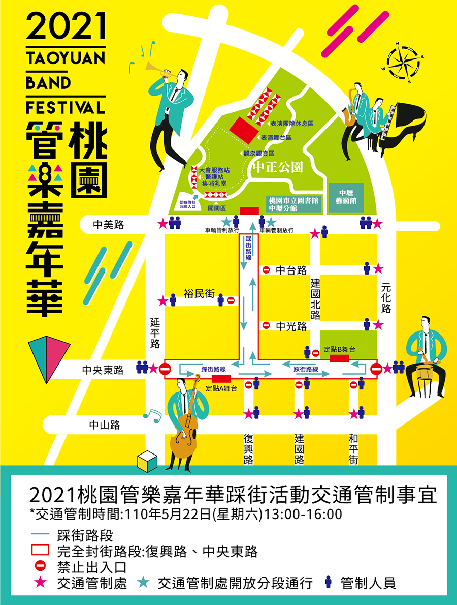

 開車前往：
開車前往：
中山高速公路 → 中壢交流道下 → 往中壢市區 → 走中園路(育樂路) → 於中華路二段向右轉 → 於中美路左轉即達。
中山高速公路 → 中壢/平鎮交流道下 → 走民族路接中正路 → 左轉延平路 → 右轉中美路 → 至復興路口即達。
停車資訊
 大眾交通資訊
大眾交通資訊
中壢站下車，請轉乘：桃園客運【1路】或中壢客運【1】或國光客運【1818】至中壢監理站下車即達。
桃園站下車，請轉乘：桃園客運【5087】或中壢客運【170】至中美路口站下車，沿中美路往延平路口步行約250公尺即達。
・桃園客運：【1路】中壢－桃園 ・中壢客運：【1】中壢－桃園 ・國光客運：【1818】臺北－中壢 以上車次請至中壢監理站下車即達。
・汎亞客運：【2004】龜山區－中壢區 至中央東路站下車，沿復興路步行約250公尺即達。